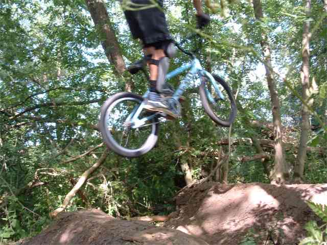
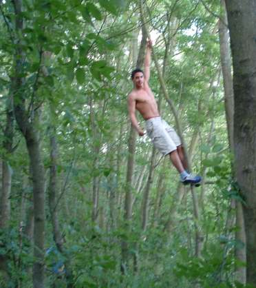
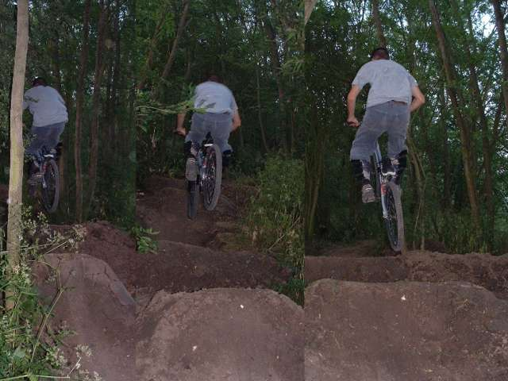
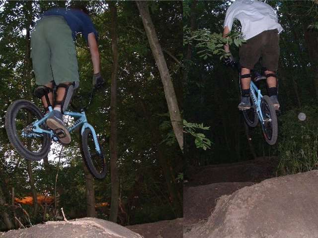

|
  this page should take 44 seconds to load apparently. nik came to our trails and took some photos - he took the one above. He also helped to make a bench, which you might see in the background of some of the pictures.Above: Tim's not coming up short, he just hasn't nose-dived yet. Left: Nik the monkey boy up a tree. he does a good tarzan impression. Below: Montage of the 6 pack. You have to jump the first like a race jump and then pump in the second bowl to clear the last set. there's also a tree in the last landing so watch out. These trails are very tight, so it's hard to get through cleanly, (well i find it hard but then I suck), so it's hard to try any tricks. I hope that once we're used to the flow and the way the jumps ride that it will become more relaxed and get a bit of style.   |